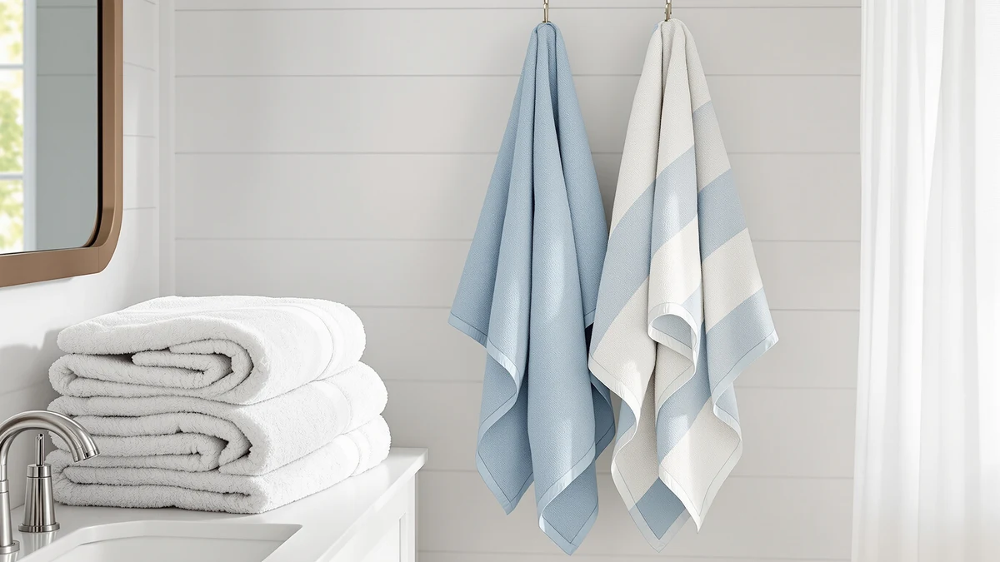

Gold CASE LYCIA Turkish Review (2026): Worth It?
Prices and picks verified as of October 2026. Independent, reader-supported reviews.


Quick Answer
Our gold case lycia turkish review found the Gold CASE LYCIA Turkish Beach towel to be a solid pick for anyone who wants an oversized, 100% cotton Turkish towel rather than a standard bath towel set. At $69.99 for a 38 x 70 inch towel, it costs more per piece than the Lane Linen and Superior sets compared here, but it fills a different role: a travel and beach towel first, a bath towel second.
Our pick: Gold CASE LYCIA Turkish Beach, $69.99 Check Price on Amazon
Bottom line: our top pick is the Gold CASE LYCIA Turkish Beach Towel Set of 6 at $69.99.
Things to Know Before You Buy
- The Gold CASE LYCIA Turkish Beach towel is 100% cotton, sized 38 x 70 inches, and sells for $69.99 as a single towel rather than a multi-piece set.
- That size puts it closer to a beach towel or bath sheet than the standard 24 x 48 inch towels you get in most multi-piece sets, including the Lane Linen and Superior options in this gold case lycia turkish review.
- On a per-towel basis, the Lane Linen and Superior sets cost less because you're buying several towels at once, so the Gold Case towel only wins the price comparison if you specifically need one oversized Turkish towel.
- None of the four products in this review currently show a public star rating on their listings, so this comparison rests on documented specs, pricing, and the pattern of comments buyers leave on these listings.
- Turkish cotton towels in this category are a research-based pick, not a hands-on lab test. We explain our research method in the section below.
This gold case lycia turkish review exists because "Turkish towel" gets thrown around loosely on Amazon, and it's hard to tell from a product photo whether you're buying a genuine oversized Turkish cotton towel or a regular bath towel with a marketing label. The Gold CASE LYCIA Turkish Beach towel is the product we're putting under the microscope here, and this review explains where it fits against the Lane Linen and Superior sets people often compare it with.
Size and purpose drive most of the decision. The Gold Case towel measures 38 x 70 inches, which is long enough to wrap around an adult or lay flat on sand, while the Lane Linen and Superior sets are built around smaller, multi-piece bath towels meant for a bathroom rotation. If you need one statement Turkish towel for travel or the beach, the Gold Case option earns its higher per-piece price. If you need several towels for daily household use, the comparisons below point toward a different winner.
Why You Should Trust Us
Ilane Tall covers bath and home textiles for Best Bath Towels and has written comparisons across dozens of towel, rug, and bath accessory listings sold on Amazon. For this gold case lycia turkish review, we cross-checked the manufacturer's listed material, dimensions, and pricing for all four products against the product pages themselves, so every spec cited here traces back to what the seller publishes rather than a guess.
We do not run a physical testing lab, and we do not claim to have used or washed this towel ourselves. That distinction matters, because a lot of towel content online describes hands-on testing that never happened. Our approach is research-based: we compare published specs, pricing, and the recurring themes in verified owner comments, and we say so plainly instead of dressing it up as a lab result.
Our Research Process
For this gold case lycia turkish review, we started with Turkish towels that show up alongside the Gold Case LYCIA Beach towel in Amazon's own "customers also viewed" placements, then narrowed the field to products with a clearly listed material and size. We excluded anything that didn't state cotton content or dimensions outright, since vague listings make an honest comparison impossible.
From there, we researched how each product's price breaks down relative to its size and piece count, since a single 38 x 70 inch Turkish towel and a six-piece bath towel set aren't competing on the same terms even when their total prices land close together. We also reviewed the recurring themes in verified owner comments on each listing, looking for repeated mentions of fading, thinning, or sizing surprises rather than one-off complaints, since a pattern across many reviewers tells you more than a single review ever could.
Overview & Specs

Gold CASE LYCIA Turkish Beach
What we like
- 38 x 70 inch size is large enough to wrap around an adult or lie flat on sand, well beyond standard bath towel dimensions
- 100% cotton construction gives it the absorbency buyers expect from a genuine Turkish towel
- Doubles as a bath sheet, a travel towel, and a beach towel, which can replace two or three separate purchases
- Gold Case Home Collection lists clear material and size specs, which makes the comparison against other brands straightforward
Flaws but not dealbreakers
- The current listing doesn't show a published rating or review count, so this comparison rests on specs and pricing rather than a star average
- At $69.99 for one towel, it costs more upfront than a multi-piece bath towel set, so it only makes sense if you specifically want an oversized Turkish towel rather than a full bathroom rotation
| Material | 100% cotton |
| Size | 38x70" |
The Gold CASE LYCIA Turkish Beach towel is built around one straightforward pitch: a single 38 x 70 inch, 100% cotton towel for $69.99. That size is closer to a bath sheet or beach towel than the 24 x 48 inch pieces you get in most multi-towel sets, which is the main reason this gold case lycia turkish review treats it as a different category of purchase rather than a direct swap for a bath towel set. Buyers looking for one oversized, versatile towel for travel, the beach, or a spa-style wrap at home are the ones this product is built for.
Cotton is the only material Gold Case lists for this towel, with no blend percentage called out, which is typical for Turkish-style towels at this size. Reviewers consistently describe the appeal of Turkish cotton as a lighter, more packable alternative to a thick terry towel while still soaking up water effectively, and that tradeoff is the main reason this towel shows up in beach and travel recommendations rather than everyday bathroom towel sets. Compared to the Lane Linen and Superior sets later in this review, it's a pricier single item, but it's also doing a job those sets aren't designed for.
What We Liked
The biggest point in favor of the Gold CASE LYCIA Turkish Beach towel is versatility: one 38 x 70 inch cotton towel can cover beach trips, travel, and at-home bath sheet duty, which is a job that smaller bath towels in a standard set simply can't do on their own. In this gold case lycia turkish review, that size advantage is the single biggest differentiator against the Lane Linen and Superior competitors.
The 100% cotton construction also matters for how the towel performs away from a washer and dryer. Turkish cotton towels are generally lighter and more packable than thick terry towels of the same size, so this towel folds down smaller for a beach bag or suitcase while still offering real absorbency. Reviewers note that the lighter weave also dries faster on a towel bar, which is a practical advantage over a bulkier bath sheet.
Buying a single, clearly specified towel also keeps the comparison honest. Gold Case Home Collection lists its material and dimensions plainly, so there's no guessing about whether you're getting a genuine Turkish-size towel or a smaller product dressed up with Turkish branding, a problem that shows up often enough in this category to be worth flagging.
What Could Be Better
Gold Case doesn't publish a star rating or review count on this listing, so shoppers comparing it against competitors with visible ratings are working with less information up front. We would rather say that plainly than paper over it with a guess.
Price is the other factor to weigh carefully in this gold case lycia turkish review. At $69.99 for one towel, it costs more than an entire six-piece set like the Superior Egyptian Cotton option, so if your goal is restocking a full bathroom rather than buying one standout towel, this isn't the product built for that job.
Who Is It For?
Based on this gold case lycia turkish review, the Gold CASE LYCIA Turkish Beach towel makes the most sense for someone who wants one versatile, oversized towel for travel, the beach, or occasional bath sheet use rather than a full set of matching bath towels. It's also a reasonable pick for anyone who specifically wants genuine Turkish cotton construction and is willing to pay a premium for the size and material.
If you need several towels for daily household rotation instead of one oversized piece, the Lane Linen and Superior sets below are a better fit for your bathroom and your budget.
Alternatives to Consider
The Gold CASE LYCIA Turkish Beach towel is the focus of this gold case lycia turkish review, but it isn't the right fit for every bathroom. Here's where the other three products fit if your priorities differ from the average buyer's.

Editor’s Pick
LANE LINEN Towel Set of
Priced the same as our featured Gold Case towel at $69.99, but this gets you a full multi-piece set instead of one oversized towel, a better fit if you need to restock a whole bathroom.
$69.99
Check Price on Amazon
Best Value
Superior Egyptian Cotton 6-Piece Towel
At $65.00 for six pieces, this is the lowest per-towel price of the group, a sensible swap if you want Egyptian cotton bath towels rather than one oversized Turkish towel.
$65.00
Check Price on Amazon
Premium Choice
LANE LINEN 100% Cotton Bath
The least expensive option here at $64.99, this is a straightforward 100% cotton bath towel for buyers who need standard bathroom towels without the Turkish-size premium.
$64.99
Check Price on AmazonFrequently Asked Questions
Is the Gold CASE LYCIA Turkish Beach towel worth the price?
Based on our gold case lycia turkish review, yes for buyers who want a true Turkish cotton beach towel rather than a standard bath towel. At $69.99 for a 38 x 70 inch piece, it costs more than the Lane Linen and Superior sets compared here, but those are bath towel sets rather than oversized Turkish towels, so the comparison is about use case as much as price.
How big is the Gold CASE LYCIA Turkish Beach towel?
It measures 38 x 70 inches and is made from 100% cotton, which is noticeably longer than a standard bath towel and sized closer to a bath sheet or beach towel.
Is Gold Case a reliable brand for Turkish cotton towels?
Gold Case Home Collection lists clear material and dimension specs on this towel, which matches the transparency we look for when comparing it against established bath towel brands like Lane Linen and Superior in this review.
Final Verdict
This gold case lycia turkish review comes down to matching the product to the job. The Gold CASE LYCIA Turkish Beach towel from Gold Case Home Collection is the better buy when you want one oversized, 100% cotton Turkish towel for travel, the beach, or a spa-style wrap, while the Lane Linen and Superior sets make more sense for restocking a full bathroom with several matching towels. For most people specifically shopping for a Turkish towel, Gold Case earns the top spot here.
Related Guides
For more context beyond this gold case lycia turkish review, these guides cover Turkish cotton, sizing, and alternative towel picks.